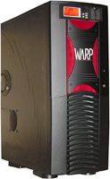

|
Þubat
ayý baþýnda Türkiye'de bir eksiklik olduðunu düþündüðümüz
bir proje olan CAD/CAM iþ istasyonunu hayata geçirdik. Tamamen
grafik iþ istasyonuna ihtiyaç duyacak profesyonellerin ihtiyaçlarý
doðrultusunda tasarladýðýmýz bu iþ istasyonun WARP hakkýnda
detaylý bilgiyi aþaðýda bulabilirsiniz:
WARP
Türkiye'nin ilk ve tek gerçek grafik iþ istasyonudur. Özellikle
3D Rendering/Animation, DCC, CAD/CAM ve Video Editing/Compositing
ile uðraþan profesyonellerin ihtiyaçlarý göz önüne alýnarak
dizayn edilmiþtir.
WARP1.5
performans ve stabilite göz önüne alýnýp özel olarak tasarlanmýþtýr.
Tasarým aþamasýnda grafik iþ istasyonuna ihtiyaç duyacak profesyonellerin
kullandýðý yazýlýmlar ve þartlar göz önüne alýnarak maksimum
performans ve stabilite hedeflenmiþtir.
Grafik
iþ istasyonlarý günlük kullanýmlarda haftalarca süren dizayn
ve günlerce aralýksýz devam eden "Rendering" süreçlerine
maruz kalýrlar. Grafik iþ istasyonlarýnýn ihtiyaç duyduðu
hýz, stabilite ve çalýþma þartlarýný yerine getirmek için
özel dizaynlarýn olmasý zorunludur:
-
Dual AthlonMP2400+ CPU
- 1 GB ECC Registered DDR-SDRAM
- Quadro4 750XGL
- AMD 762/768 MPX Chipset
- AGP-Pro Slot
- 3 x 33MHz-32Bit PCI
- 2 x 66MHz-64/32Bit PCI
- 4 x USB 2.0
- 2 x USB 1.1
- 2 x serial, 1 x paralel port
- 100Mbit Fast Ethernet
- 48x16x48x CD-RW
- 60GB, 7200rpm, Main IDE HDD
- 16bit/44KHz standart Audio
- 360W Power Supply
- DDR-SDRAM'ler için pasif soðutma
- Rounded IDE & Floppy Cables
- 4 x 80x80x24mm Extra fan
- Ön Panel LCD monitör
- Opsiyonel 66MHz-32bit, 256MB Int. Cache, 4 kanal profesyonel
RAID kontrolcüsü
Ýrtibat:
Alp Özdemir, alp@hardwaremania.com
http://www.warpmania.com
Tel: (212) 296 27 90 / dahili: 12
Faks: (212) 291 04 79
Kopro Ltd. Þti.
Cumhuriyet Mah. Nakiye Elgün Sok.
No:22-24 Kat:2 D:6
80260 Osmanbey Ýstanbul
|